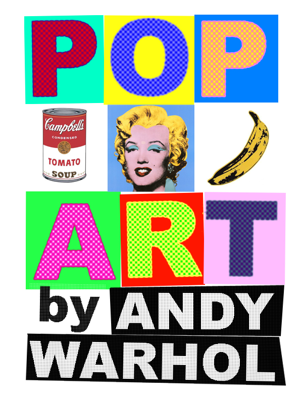

Andy Warhol
A Carnegie Mellon Inspiration
Upcoming Events
Special Film Exhibit
Warhol’s most important films, including The Chelsea Girls (1966) and Screen Tests (1964-66), will be continuously projected on more than 20 large screens.
Gallery Talk by Artist Educators
Each weekday at 1pm we invite interested visitors to join in a gallery talk led by one of The Warhol's artist educators.
Half-Price Fridays
Half-Price Admission and cash bar For a more social experience, the Museum is open late with a cash bar in the entrance gallery and special half-price regular Museum admission.
Exhibit One: College life
The Warhol presentation at Miller Gallery celebrates Andy Warhol’s work in film and video with the inauguration of a long-term exhibition showcasing the largest installation of his media works.
Exhibit Two: Popart
The Warhol presentation at Miller Gallery presents a survey exhibition of work by Japanese artist Yasumasa Morimura. Morimura is renowned for his photographic reprisals of iconic images from art history and popular culture in which he replaces the subjects with his own self-image.
Testimonies
This exhibition pays a great tribute to an artist I only knew as a pop icon before coming here. Little did I know that Andy Warhol had so many different styles and periods during his life.
-Jane Doe
The Andy Warhol CMU exhibition is a great experience for a lot of different reasons. It manages to be true to its inspiration, yet is accessible to a wide range of people. Job well done and can't wait to go back!
-John Smith
Great exhibit. Even if you don't like Warhol's work you may still find it pretty intriguing.
-Barrack Obama
As a Carnegie Mellon student, I'm always looking for ways to learn more about alums. This was such a great tribute to Andy Warhol and the accomplishments of one of our own.
-Steve Jobs